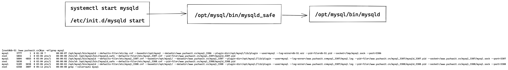
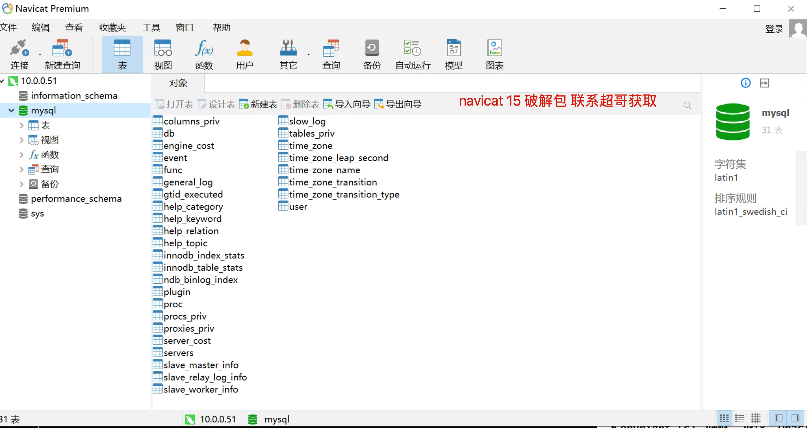
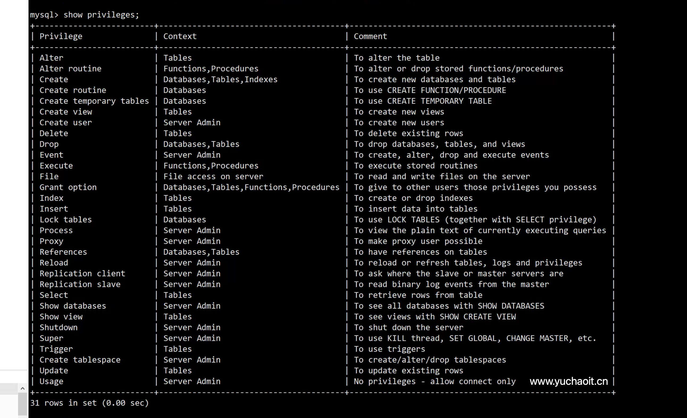

02-3-mysql运维核心基础
1.启动、关闭mysql
脚本启动，是后台启动
systemctl start/stop/restart mysqld
service mysqld start
/etc/init.d/mysqld start
其实脚本，也依然是调用mysql提供的二进制命令启动的
[root@db-51 /www.yuchaoit.cn]#ls /opt/mysql/bin/mysqld* -l
-rwxr-xr-x 1 mysql mysql 260613605 Sep 27 2019 /opt/mysql/bin/mysqld
-rwxr-xr-x 1 mysql mysql 213374233 Sep 27 2019 /opt/mysql/bin/mysqld-debug
-rwxr-xr-x 1 mysql mysql 27139 Sep 27 2019 /opt/mysql/bin/mysqld_multi
-rwxr-xr-x 1 mysql mysql 28494 Sep 27 2019 /opt/mysql/bin/mysqld_safe
-rwxr-xr-x 1 mysql mysql 15712383 Sep 27 2019 /opt/mysql/bin/mysqldump
-rwxr-xr-x 1 mysql mysql 7865 Sep 27 2019 /opt/mysql/bin/mysqldumpslow
mysqld_safe和mysqld区别
mysqld_safe作用
1. mysql官方启动脚本，是以执行mysqld_safe为入口，其实mysqld_safe也是个shell脚本，调用了myqsld命令启动服务
2.mysqld_safe脚本设置运行环境，如以守护进程运行
3.mysqld_safe检测mysqld运行状态
4.mysqld_safe检测mysqld进程运行信息，写入 mysql实例目录下的hostname.err文件
5.以及mysqld_safe会读取my.cnf配置文件的[mysqld],[mysqld_safe]等配置
mysqld作用
mysqld是mysql的核心程序，用于管理mysql的数据库文件，以及用户执行的SQL请求
mysqld读取my.cnf中 [mysqld]配置

启动命令区别
[root@db-51 /www.yuchaoit.cn]#ps -ef|grep mysql
mysql 3777 1 0 01:20 ? 00:00:07 /opt/mysql/bin/mysqld --defaults-file=/etc/my.cnf --basedir=/opt/mysql --datadir=/www.yuchaoit.cn/mysql_3306 --plugin-dir=/opt/mysql/lib/plugin --user=mysql --log-error=db-51.err --pid-file=db-51.pid --socket=/tmp/mysql.sock --port=3306
root 4855 1 0 03:04 pts/1 00:00:00 /bin/sh /opt/mysql/bin//mysqld_safe --defaults-file=/etc/mysql_3307.cnf --pid-file=/www.yuchaoit.cn/mysql_3307/mysqld_3307.pid
mysql 5004 4855 0 03:04 pts/1 00:00:02 /opt/mysql/bin/mysqld --defaults-file=/etc/mysql_3307.cnf --basedir=/opt/mysql/ --datadir=/www.yuchaoit.cn/mysql_3307 --plugin-dir=/opt/mysql//lib/plugin --user=mysql --log-error=/www.yuchaoit.cnmysql_3307/mysql.log --pid-file=/www.yuchaoit.cn/mysql_3307/mysqld_3307.pid --socket=/www.yuchaoit.cn/mysql_3307/mysql.sock --port=3307
root 5038 1 0 03:04 pts/1 00:00:00 /bin/sh /opt/mysql/bin//mysqld_safe --defaults-file=/etc/mysql_3308.cnf --pid-file=/www.yuchaoit.cn/mysql_3308/mysqld_3308.pid
mysql 5189 5038 0 03:04 pts/1 00:00:02 /opt/mysql/bin/mysqld --defaults-file=/etc/mysql_3308.cnf --basedir=/opt/mysql/ --datadir=/www.yuchaoit.cn/mysql_3308 --plugin-dir=/opt/mysql//lib/plugin --user=mysql --log-error=/www.yuchaoit.cnmysql_3307/mysql.log --pid-file=/www.yuchaoit.cn/mysql_3308/mysqld_3308.pid --socket=/www.yuchaoit.cn/mysql_3308/mysql.sock --port=3308
2.关闭mysql
脚本关闭
systemctl stop mysqld
service mysqld stop
/etc/init.d/mysqld stop
命令关闭
mysql -uroot -pwww.yuchaoit.cn -e 'shutdown;'
[root@db-51 /www.yuchaoit.cn]#netstat -tunlp|grep mysql
tcp6 0 0 :::3307 :::* LISTEN 5004/mysqld
tcp6 0 0 :::3308 :::* LISTEN 5189/mysqld
[root@db-51 /www.yuchaoit.cn]#systemctl start mysqld
[root@db-51 /www.yuchaoit.cn]#!net
netstat -tunlp|grep mysql
tcp6 0 0 :::3306 :::* LISTEN 6598/mysqld
tcp6 0 0 :::3307 :::* LISTEN 5004/mysqld
tcp6 0 0 :::3308 :::* LISTEN 5189/mysqld
特殊情况下，不建议用这个操作
kill pid
pkill mysqld
killall mysqld
kill -9 pid # 极端情况下，才能用这个
3.自定义mysqld服务管理脚本
cat > /etc/systemd/system/mysqld.service <<'EOF'
[Unit]
Description=mysql server by www.yuchaoit.cn
Documentation=man:mysqld(8)
Documentation=https://dev.mysql.com/doc/refman/en/using-systemd.html
After=network.target
After=syslog.target
[Install]
WantedBy=multi-user.target
[Service]
User=mysql
Group=mysql
ExecStart=/opt/mysql/bin/mysqld --defaults-file=/etc/my.cnf
LimitNOFILE=5000
EOF
4.配置文件模板
[root@db-51 ~]#cat /etc/my.cnf
[mysqld] # 服务端标签
port=3306 # 端口
server_id # 主机编号，用于主从复制
user=mysql # 内置运行用户
basedir=/opt/mysql # 软件目录
datadir=/www.yuchaoit.cn/mysql_3306 # 数据目录
socket=/tmp/mysql.sock # 套接字文件路径
[mysql]
socket=/tmp/mysql.sock # mysql客户端连接数据库，默认读取的socket文件路径
配置语法
[server] 服务端读取的配置
[mysqld] mysqld进程读取的配置
[mysqld_safe] mysqld_safe脚本会加载的配置
客户端配置参数
[mysql] 客户端命令读取的设置
[client] 所有本地客户端读取的设置
[mysqldump] 备份命令读取的设置
5.远程连接管理
本地连接
授权语句，创建一个用户，只允许本地连接
mysql -uroot -pwww.yuchaoit.cn -e "grant all privileges on *.* to yuchao01@'localhost' identified by 'yuchao666';"
查看mysql的用户表
mysql> select User,Host,authentication_string from mysql.user;
+---------------+-----------+-------------------------------------------+
| User | Host | authentication_string |
+---------------+-----------+-------------------------------------------+
| root | localhost | *E4270FA99E3E2D95856323D2C35CB2E4728028A1 |
| mysql.session | localhost | *THISISNOTAVALIDPASSWORDTHATCANBEUSEDHERE |
| mysql.sys | localhost | *THISISNOTAVALIDPASSWORDTHATCANBEUSEDHERE |
| yuchao01 | localhost | *518455521988924B96DD6FFF6F10BC59693382B0 |
+---------------+-----------+-------------------------------------------+
4 rows in set (0.00 sec)
本地账号登录
[root@db-51 ~]#mysql -uyuchao01 -pyuchao666
[root@db-51 ~]#mysql -uyuchao01 -pyuchao666 -h127.0.0.1
[root@db-51 ~]#mysql -uyuchao01 -pyuchao666 -hlocalhost
[root@db-51 ~]#mysql -uyuchao01 -pyuchao666 -h127.0.0.1 -P3306
使用mysql套接字登录
[root@db-51 ~]#mysql -uyuchao01 -pyuchao666 -S /tmp/mysql.sock -e "show databases;"
mysql: [Warning] Using a password on the command line interface can be insecure.
+--------------------+
| Database |
+--------------------+
| information_schema |
| mysql |
| performance_schema |
| sys |
+--------------------+
远程连接
授权，允许访问的网段
# 只允许yuchao02用户在 10.0.0.x 网段登录，有最大的权限
# 授权语句只能用root去操作
mysql -uroot -pwww.yuchaoit.cn -S /tmp/mysql.sock -e "grant all on *.* to yuchao02@'10.0.0.%' identified by 'yuchao666';"
试试远程去登录
[root@web-7 ~]#mysql -uyuchao02 -pyuchao666 -h10.0.0.51 -P3306
Welcome to the MariaDB monitor. Commands end with ; or \g.
Your MySQL connection id is 15
Server version: 5.7.28 MySQL Community Server (GPL)
Copyright (c) 2000, 2018, Oracle, MariaDB Corporation Ab and others.
Type 'help;' or '\h' for help. Type '\c' to clear the current input statement.
MySQL [(none)]> select user();
+-------------------+
| user() |
+-------------------+
| yuchao02@10.0.0.7 |
+-------------------+
1 row in set (0.00 sec)
MySQL [(none)]>
navicat图形化访问

6.mysql用户管理
6.1 用户说明
linux 用户
- 登录系统
- 管理文件
mysql用户
- 登录mysql
- 管理mysql的库、表
6.2 远程登录白名单语法
mysql -uroot -pwww.yuchaoit.cn -S /tmp/mysql.sock -e "grant all on *.* to bob01@'10.0.0.7' identified by 'yuchao666';"
mysql 用户授权语法
用户名@'网段白名单'
语法
yuchao@'localhost' yuchao可以在本地登录（ip:3306），以及socket
yuchao@'10.0.0.10' yuchao只能在10.0.0.10这个客户端登录
yuchao@'10.0.0.%' yuchao只能在10.0.0.xx/24网段登录
yuchao@'10.0.0.5%' yuchao只能在10.0.0.50~59 登录
yuchao@'%' yuchao可以在任意地址登录该mysql服务端
yuchao@'db-51' 基于主机名的登录限制
6.3 用户管理
查看mysql用户列表
[root@db-51 ~]#mysql -uroot -pwww.yuchaoit.cn -e 'select User,Host,authentication_string from mysql.user;'
mysql: [Warning] Using a password on the command line interface can be insecure.
+---------------+-----------+-------------------------------------------+
| User | Host | authentication_string |
+---------------+-----------+-------------------------------------------+
| root | localhost | *E4270FA99E3E2D95856323D2C35CB2E4728028A1 |
| mysql.session | localhost | *THISISNOTAVALIDPASSWORDTHATCANBEUSEDHERE |
| mysql.sys | localhost | *THISISNOTAVALIDPASSWORDTHATCANBEUSEDHERE |
| yuchao01 | localhost | *518455521988924B96DD6FFF6F10BC59693382B0 |
| yuchao02 | 10.0.0.% | *518455521988924B96DD6FFF6F10BC59693382B0 |
| bob01 | 10.0.0.7 | *518455521988924B96DD6FFF6F10BC59693382B0 |
+---------------+-----------+-------------------------------------------+
[root@db-51 ~]#
创建用户
create user chaoge01@'localhost'; # 创建用户无密码
select user,host,authentication_string from mysql.user; # 查询
创建且设置密码
create user chaoge02@'localhost' identified by '123';
修改用户密码，root去修改
alter user chaoge01@'localhost' identified by '123';
alter user chaoge01@'localhost' identified by 'yuchaoge666';
改自己密码
[root@db-51 ~]#
[root@db-51 ~]#mysql -uchaoge02 -p123
mysql: [Warning] Using a password on the command line interface can be insecure.
Welcome to the MySQL monitor. Commands end with ; or \g.
Your MySQL connection id is 27
Server version: 5.7.28 MySQL Community Server (GPL)
Copyright (c) 2000, 2019, Oracle and/or its affiliates. All rights reserved.
Oracle is a registered trademark of Oracle Corporation and/or its
affiliates. Other names may be trademarks of their respective
owners.
Type 'help;' or '\h' for help. Type '\c' to clear the current input statement.
mysql> set password=password('chaoge666');
Query OK, 0 rows affected, 1 warning (0.00 sec)
mysql>
删除用户
mysql> drop user chaoge02@'localhost';
Query OK, 0 rows affected (0.00 sec)
7.授权管理
权限的作用
限制mysql的用户，可以执行哪些SQL语句。
查看授权规则语法

grant授权命令
查看所有文档
mysql> help grant;
语法
grant all privileges on *.* to 'yuchaoit'@'10.0.0.%' identifiedy by 'chaoge666';
授权实践
root默认不允许远程登录，给与权限，允许远程登录
grant all privileges on *.* to 'root'@'%' identified by 'chaoge666';
给一个普通开发者的账户权限，只能增删改查基本操作，且限定某个数据库，且只允许在内网环境连接。
grant select,update,delete,insert on crm.* to dev01@'10.0.0.%' identified by 'dev666';
查看具体用户的权限
mysql> show grants for chaoge01@'localhost';
+----------------------------------------------+
| Grants for chaoge01@localhost |
+----------------------------------------------+
| GRANT USAGE ON *.* TO 'chaoge01'@'localhost' |
+----------------------------------------------+
1 row in set (0.00 sec)
回收权限
# 移除删除权限
revoke delete on *.* from dev01@'10.0.0.%';
# 移除所有权限，针对crm这个库
revoke all on crm.* from dev01@'10.0.0.%';
再次查询
show grants for dev01@'10.0.0.%';
只有账户、无任意权限
该账户只能登录
mysql> show grants for dev01@'10.0.0.%';
+------------------------------------------+
| Grants for dev01@10.0.0.% |
+------------------------------------------+
| GRANT USAGE ON *.* TO 'dev01'@'10.0.0.%' |
+------------------------------------------+
1 row in set (0.00 sec)
privileges权限表
All/All Privileges权限代表全局或者全数据库对象级别的所有权限
Alter权限代表允许修改表结构的权限，但必须要求有create和insert权限配合。如果是rename表名，则要求有alter和drop原表， create和insert新表的权限
Alter routine权限代表允许修改或者删除存储过程、函数的权限
Create权限代表允许创建新的数据库和表的权限
Create routine权限代表允许创建存储过程、函数的权限
Create tablespace权限代表允许创建、修改、删除表空间和日志组的权限
Create temporary tables权限代表允许创建临时表的权限
Create user权限代表允许创建、修改、删除、重命名user的权限
Create view权限代表允许创建视图的权限
Delete权限代表允许删除行数据的权限
Drop权限代表允许删除数据库、表、视图的权限，包括truncate table命令
Event权限代表允许查询，创建，修改，删除MySQL事件
Execute权限代表允许执行存储过程和函数的权限
File权限代表允许在MySQL可以访问的目录进行读写磁盘文件操作，可使用的命令包括load data infile,select … into outfile,load file()函数
Grant option权限代表是否允许此用户授权或者收回给其他用户你给予的权限,重新付给管理员的时候需要加上这个权限
Index权限代表是否允许创建和删除索引
Insert权限代表是否允许在表里插入数据，同时在执行analyze table,optimize table,repair table语句的时候也需要insert权限
Lock权限代表允许对拥有select权限的表进行锁定，以防止其他链接对此表的读或写
Process权限代表允许查看MySQL中的进程信息，比如执行show processlist, mysqladmin processlist, show engine等命令
Reference权限是在5.7.6版本之后引入，代表是否允许创建外键
Reload权限代表允许执行flush命令，指明重新加载权限表到系统内存中，refresh命令代表关闭和重新开启日志文件并刷新所有的表
Replication client权限代表允许执行show master status,show slave status,show binary logs命令
Replication slave权限代表允许slave主机通过此用户连接master以便建立主从复制关系
Select权限代表允许从表中查看数据，某些不查询表数据的select执行则不需要此权限，如Select 1+1， Select PI()+2；而且select权限在执行update/delete语句中含有where条件的情况下也是需要的
Show databases权限代表通过执行show databases命令查看所有的数据库名
Show view权限代表通过执行show create view命令查看视图创建的语句
Shutdown权限代表允许关闭数据库实例，执行语句包括mysqladmin shutdown
Super权限代表允许执行一系列数据库管理命令，包括kill强制关闭某个连接命令， change master to创建复制关系命令，以及create/alter/drop server等命令
Trigger权限代表允许创建，删除，执行，显示触发器的权限
Update权限代表允许修改表中的数据的权限
Usage权限是创建一个用户之后的默认权限，其本身代表连接登录权限
# by www.yuchaoit.cn
8.修改root密码
Mysqladmin改密码
[root@db-51 ~]#mysqladmin -uroot -pwww.yuchaoit.cn password yuchao666
set语句修改
mysql> set password for root@localhost=password('chaoge666');
Query OK, 0 rows affected, 1 warning (0.00 sec)
mysql> flush privileges;
Query OK, 0 rows affected (0.01 sec)
update语句修改
mysql> update mysql.user set authentication_string=password("www.yuchaoit.cn") where user='root' and host='localhost';
Query OK, 1 row affected, 1 warning (0.00 sec)
Rows matched: 1 Changed: 1 Warnings: 1
mysql> flush privileges;
Query OK, 0 rows affected (0.00 sec)
刷新后，权限表会更新
用户修改自己密码
mysql> set password=password('yuchao666');
Query OK, 0 rows affected, 1 warning (0.00 sec)
mysql>
9.忘记root密码咋办
1.停止服务
[root@db-51 ~]#systemctl stop mysql
2.跳过授权表，免密运行mysqld服务端
[root@db-51 ~]#mysqld_safe --skip-grant-tables --user=mysql
2022-07-20T09:45:54.661054Z mysqld_safe Logging to '/www.yuchaoit.cn/mysql_3306/db-51.err'.
2022-07-20T09:45:54.684950Z mysqld_safe Starting mysqld daemon with databases from /www.yuchaoit.cn/mysql_3306
3.改密码
只能用update语句
mysql> update mysql.user set authentication_string=password('www.yuchaoit.cn') where user='root' and host='localhost';
Query OK, 1 row affected, 1 warning (0.00 sec)
Rows matched: 1 Changed: 1 Warnings: 1
4.停止mysql
mysql> shutdown;
Query OK, 0 rows affected (0.00 sec)
5.重启mysql
systemctl start mysql
再次登录
[root@db-51 ~]#mysql -uroot -pwww.yuchaoit.cn
6.超哥提醒
授权表参数，会导致任意客户端，都可以免密直接登录，务必要记住要删掉